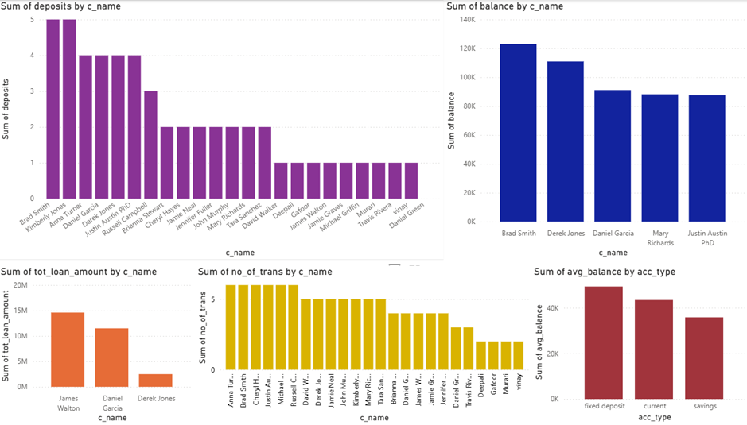

A SQL-backed banking system simulating core banking operations — account management, loan tracking, branch analytics, transaction reporting, and customer intelligence via Python CLI.
A complete banking management system that simulates core banking operations — account management, loan portfolio tracking, branch-level analytics, and transaction history reporting — built with Python and MySQL.
The system demonstrates advanced SQL query design alongside Python for data processing and CSV-based report generation.
The project showcases production-level SQL — complex joins, aggregations, CTEs, and window functions for business reporting. All query outputs are exported as structured CSV files for downstream analysis.
Python connects to MySQL, executes the query suite, processes results with Pandas, and exports clean CSV reports — creating a complete data pipeline from database to business report.
